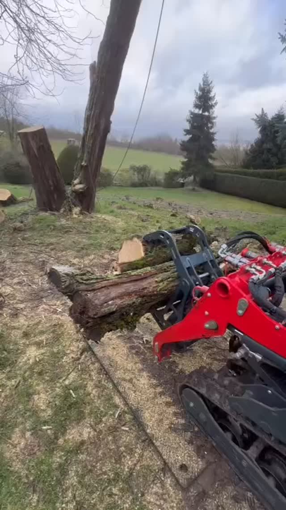
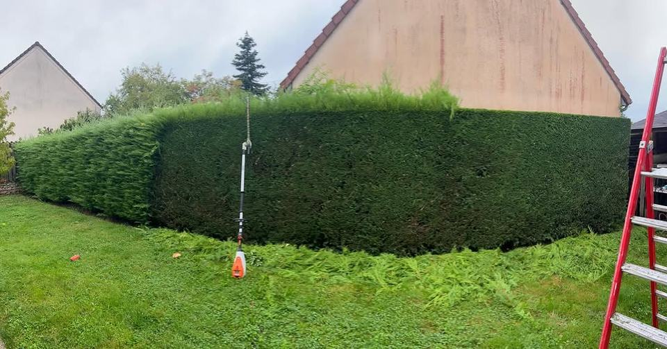
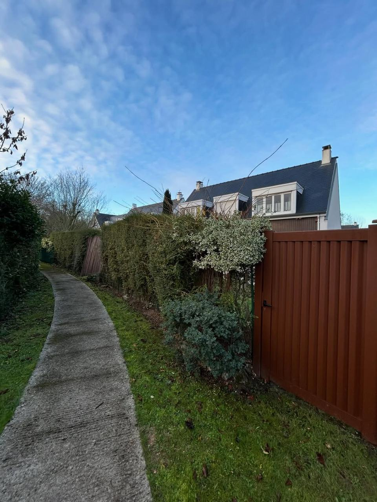
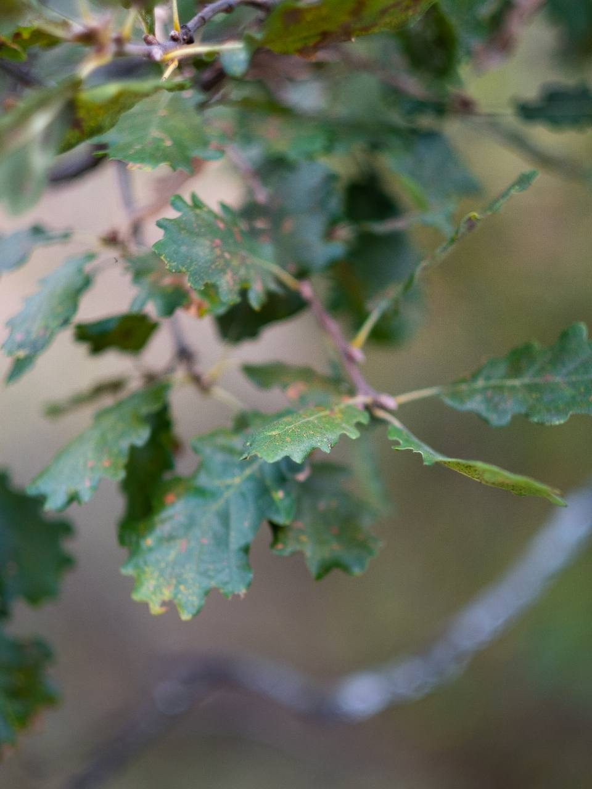

Automne
- Ramassage des feuilles
- Plantation des haies et des arbres
- Dernières tontes de la saison
- Début de la saison d’élagage
Paysagistes · De père en fils depuis 1975
Élagage, abattage, taille de haies et entretien de jardins dans l’ouest des Yvelines, pour les particuliers comme pour les professionnels. Une entreprise familiale, un interlocuteur unique et des chantiers rendus propres.

Nos métiers
Un chêne qui menace la toiture, une haie qui a pris ses aises, un jardin à remettre en ordre : nous intervenons avec le bon matériel et, surtout, le bon geste.
Taille douce, suppression du bois mort, réduction de couronne : on rééquilibre l’arbre sans le mutiler.

Abattage direct ou démontage quand la place manque, puis évacuation du gros bois, même en zone difficile d’accès.

Tonte, taille de haies, ramassage des feuilles : à la demande ou avec un contrat d’entretien annuel.

Plantation de haies et d’arbres, remise en état, clôture à la place d’une haie vieillissante.
Notre façon de travailler
Nous venons voir l’arbre ou le jardin pour comprendre votre besoin et vous dire franchement ce qui est utile.
Un devis détaillé et sans jargon : ce qui sera fait, comment, et ce que deviennent les déchets verts.
Matériel adapté, zone balisée, démontage par sections à proximité des habitations.
Branches broyées, bois débité, allées nettoyées : vous retrouvez un jardin net.

De père en fils
Plaisir, Maurepas, puis Saint-Germain-de-la-Grange : depuis plus de cinquante ans, la famille Lebrun prend soin des arbres et des jardins de l’ouest des Yvelines.
Lancée par Jean Lebrun et aujourd’hui dirigée par Jean-Michel Lebrun, l’entreprise perpétue un métier transmis de père en fils : observer l’arbre avant de le tailler, et respecter chaque jardin comme si c’était le sien.
Nos derniers chantiers
Élagage en nacelle, haies reprises, gros bois évacués : nous publions nos chantiers sur Instagram.
Calendrier du jardin
Chaque saison a ses travaux. Voici ce que nous recommandons — la saison en cours est mise en avant.
Zone d’intervention
Installés rue du Haut Boutron, nous intervenons dans notre commune et dans les villes et villages voisins.
Décrivez-nous votre besoin : nous passons voir sur place et vous remettons un devis clair, sans engagement.